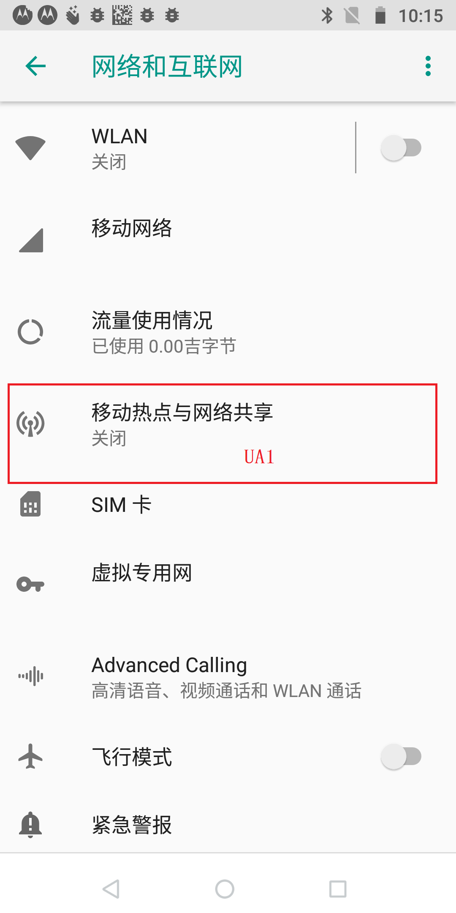
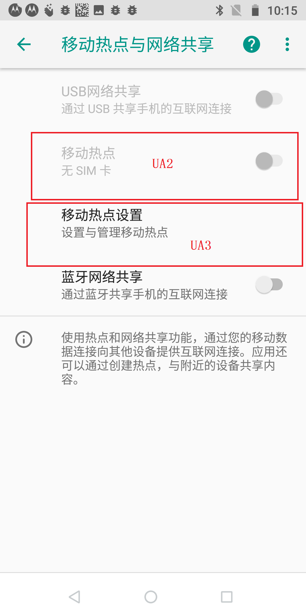
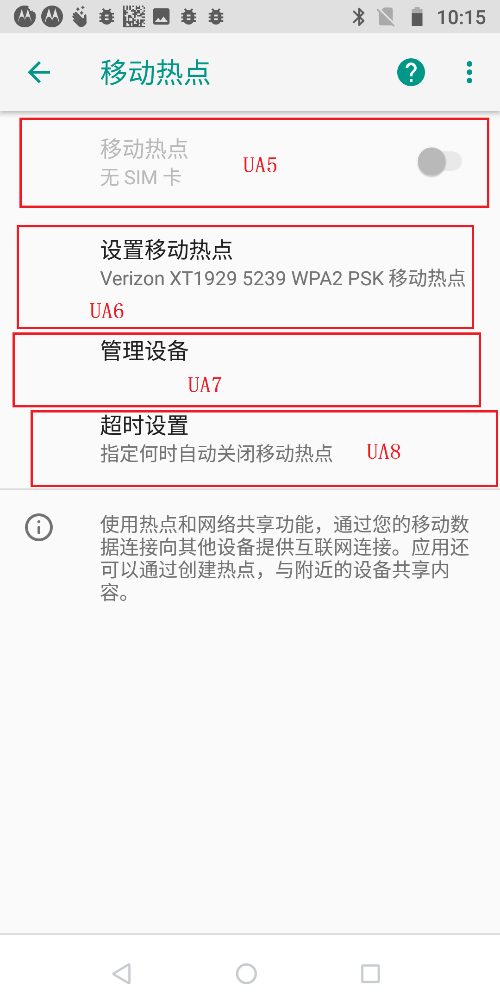
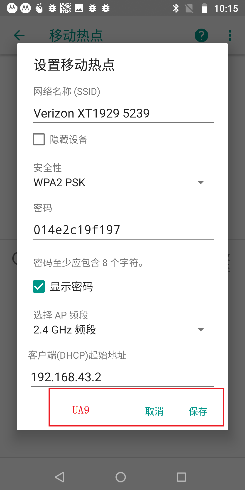
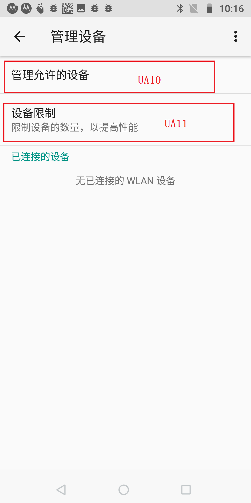
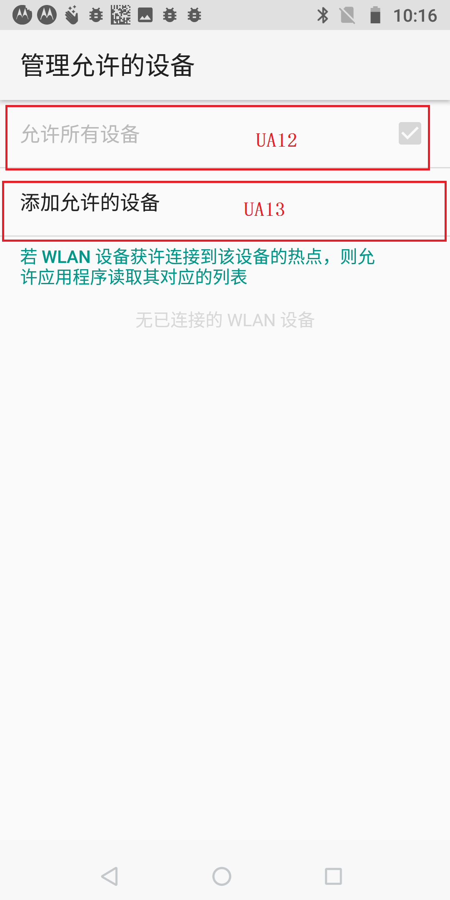
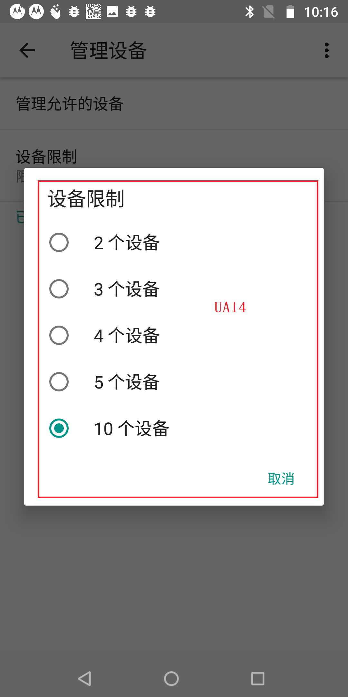
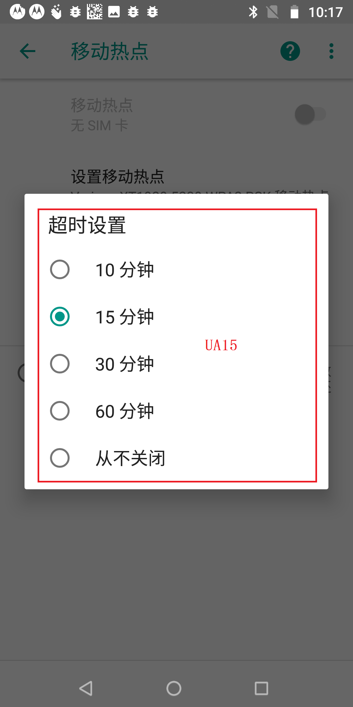

UA字符可选值 移动热点与网络共享
UA布局及ID 当前的UI为
Activity: [NetworkDashboardActivity] SettingsActivity.java 实现了 OnPreferenceStartFragmentCallback 接口
Fragment:NetworkDashboardFragment
标题字符串
<string name="tether_settings_title_all" >"热点和网络共享"</string>
Androidmanifest.xml 定义的热点设置界面Activity
<activity android:name="Settings$TetherSettingsActivity"
android:label="@string/tether_settings_title_all"
android:icon="@drawable/ic_settings_wireless"
android:taskAffinity="">
<intent-filter>
<action android:name="android.intent.action.MAIN" />
<category android:name="android.intent.category.DEFAULT" />
<category android:name="android.intent.category.VOICE_LAUNCH" />
<category android:name="com.android.settings.SHORTCUT" />
</intent-filter>
<meta-data android:name="com.android.settings.FRAGMENT_CLASS"
android:value="com.android.settings.TetherSettings" />
</activity>
/packages/apps/Settings/src/com/android/settings/network/NetworkDashboardFragment.java
public class NetworkDashboardFragment extends DashboardFragment implements MobilePlanPreferenceController.MobilePlanPreferenceHost {
@Override
protected List<PreferenceController> getPreferenceControllers(Context context) {
final List<PreferenceController> controllers = new ArrayList<>();
// 热点网络的 Preference
controllers.add(new TetherPreferenceController(context, lifecycle));
}
]
NetworkDashboardFragment 的父类 DashboardFragment
/packages/apps/Settings/src/com/android/settings/network/NetworkDashboardFragment.java
public abstract class DashboardFragment extends SettingsPreferenceFragment implements SettingsDrawerActivity.CategoryListener, Indexable, SummaryLoader.SummaryConsumer {
@Override //NetworkDashboardFragment下的 Preference的点击事件
public boolean onPreferenceTreeClick(Preference preference) {
Collection<PreferenceController> controllers = mPreferenceControllers.values();
// If preference contains intent, log it before handling.
mMetricsFeatureProvider.logDashboardStartIntent(getContext(), preference.getIntent(), getMetricsCategory());
// Give all controllers a chance to handle click.
for (PreferenceController controller : controllers) {
if (controller.handlePreferenceTreeClick(preference)) { // View 的点击事件会去 遍历 所有的 PreferenceController 问他们是否处理事件 处理就返回true 不处理 就返回false
return true;
}
}
return super.onPreferenceTreeClick(preference); // 点击当前的Preference时 调用父类的onPreferenceTreeClick
}
DashboardFragment 的父类 SettingsPreferenceFragment
/packages/apps/Settings/src/com/android/settings/SettingsPreferenceFragment.java
public abstract class SettingsPreferenceFragment extends InstrumentedPreferenceFragment implements DialogCreatable {}
SettingsPreferenceFragment 的父类 InstrumentedPreferenceFragment
/packages/apps/Settings/src/com/android/settings/core/InstrumentedPreferenceFragment.java
public abstract class InstrumentedPreferenceFragment extends ObservablePreferenceFragment implements Instrumentable {}
InstrumentedPreferenceFragment 的父类 ObservablePreferenceFragment
/packages/apps/Settings/src/com/android/settings/core/lifecycle/ObservablePreferenceFragment.java
public abstract class ObservablePreferenceFragment extends PreferenceFragment {}
ObservablePreferenceFragment 的父类 PreferenceFragment.java
/frameworks/base/core/java/android/preference/PreferenceFragment.java // 尼玛这一层层的继承
public abstract class PreferenceFragment extends Fragment implements PreferenceManager.OnPreferenceTreeClickListener {
public boolean onPreferenceTreeClick(PreferenceScreen preferenceScreen,Preference preference) {
if (preference.getFragment() != null && getActivity() instanceof OnPreferenceStartFragmentCallback) { // 当前Activity 实现了 OnPreferenceStartFragmentCallback
return ((OnPreferenceStartFragmentCallback)getActivity()).onPreferenceStartFragment(this, preference); // 执行切换 Fragment 的操作
}
return false;
}
public interface OnPreferenceStartFragmentCallback { // SettingsActivity 实现了这个接口
boolean onPreferenceStartFragment(PreferenceFragment caller, Preference pref);
}
/packages/apps/Settings/src/com/android/settings/SettingsActivity.java 【 [NetworkDashboardActivity] SettingsActivity.java 】
public class SettingsActivity extends SettingsDrawerActivity
implements PreferenceManager.OnPreferenceTreeClickListener,
PreferenceFragment.OnPreferenceStartFragmentCallback【实现的接口】,
ButtonBarHandler, FragmentManager.OnBackStackChangedListener {
@Override SettingsActivity.java
public boolean onPreferenceStartFragment(PreferenceFragment caller, Preference pref) {
startPreferencePanel(caller, pref.getFragment(), pref.getExtras(), -1, pref.getTitle(),null, 0);
return true;
}
SettingsActivity.java
public void startPreferencePanel(Fragment caller, String fragmentClass, Bundle args,int titleRes, CharSequence titleText, Fragment resultTo, int resultRequestCode) {
String title = null;
if (titleRes < 0) {
if (titleText != null) {
title = titleText.toString();
} else {
title = "";
}
}
// 完成 跳转 【在布局文件中定义了 热点设置的 Fragment android:fragment="com.android.settings.TetherSettings" 】
Utils.startWithFragment(this, fragmentClass, args, resultTo, resultRequestCode,titleRes, title, mIsShortcut, mMetricsFeatureProvider.getMetricsCategory(caller));
}
}
/frameworks/base/packages/SettingsLib/src/com/android/settingslib/RestrictedPreference.java
public class RestrictedPreference extends TwoTargetPreference {} 【View】
/frameworks/base/packages/SettingsLib/src/com/android/settingslib/TwoTargetPreference.java
public class TwoTargetPreference extends Preference {}
/packages/apps/Settings/src/com/android/settings/network/TetherPreferenceController.java
public class TetherPreferenceController extends PreferenceController { 【Controller】
/packages/apps/Settings/src/com/android/settings/core/PreferenceController.java
public abstract class PreferenceController extends AbstractPreferenceController {}
packages/apps/Settings/res/xml/network_and_internet.xml
<PreferenceScreen
xmlns:android="http://schemas.android.com/apk/res/android"
xmlns:settings="http://schemas.android.com/apk/res/com.android.settings"
android:title="@string/network_dashboard_title">
<com.android.settings.widget.MasterSwitchPreference
android:fragment="com.android.settings.wifi.WifiSettings"
android:key="toggle_wifi"
android:title="@string/wifi_settings" 【WLAN】
【<string name="summary_placeholder" > </string> 由WIFI状态动态设置 这里只是占位符】
android:summary="@string/summary_placeholder"
android:icon="@drawable/ic_settings_wireless"
android:order="-30">
【在配置每个Preference元素节点时，我们可以显示为点击它时所跳转的Intent。点击该Preference，跳转至目标Intent】
<intent
android:action="android.settings.WIFI_SETTINGS"
android:targetClass="Settings$WifiSettingsActivity"/> // WifiSettingsActivity 目标类名
</com.android.settings.widget.MasterSwitchPreference>
<com.android.settingslib.RestrictedPreference
android:key="mobile_network_settings"
android:title="@string/network_settings_title"
android:icon="@drawable/ic_network_cell"
android:dependency="toggle_airplane"
android:order="-15"
settings:keywords="@string/keywords_more_mobile_networks"
settings:userRestriction="no_config_mobile_networks"
settings:useAdminDisabledSummary="true">
<intent
android:action="android.intent.action.MAIN"
android:targetPackage="com.android.phone"
android:targetClass="com.android.phone.MobileNetworkSettings"/>
</com.android.settingslib.RestrictedPreference>
<com.android.settingslib.RestrictedPreference 【RestrictedPreference点击事件】
【指定打开fragment -- TetherSettings】
android:fragment="com.android.settings.TetherSettings" android:key="tether_settings"
【<string name="tether_settings_title_all">"热点和网络共享"</string>】
android:title="@string/tether_settings_title_all"
android:icon="@drawable/ic_wifi_tethering"
android:order="-5"
android:summary="@string/summary_placeholder"
settings:userRestriction="no_config_tethering"
settings:useAdminDisabledSummary="true"/>
<com.android.settingslib.RestrictedPreference
android:fragment="com.android.settings.vpn2.VpnSettings"
android:key="vpn_settings"
android:title="@string/vpn_settings_title"
android:icon="@drawable/ic_vpn_key"
android:order="0"
android:summary="@string/summary_placeholder"
settings:userRestriction="no_config_vpn"
settings:useAdminDisabledSummary="true"/>
<com.android.settingslib.RestrictedPreference
android:key="manage_mobile_plan"
android:title="@string/manage_mobile_plan_title"
android:persistent="false"
settings:userRestriction="no_config_mobile_networks"
settings:useAdminDisabledSummary="true"/>
<SwitchPreference
android:key="toggle_airplane"
android:title="@string/airplane_mode"
android:icon="@drawable/ic_airplanemode_active"
android:disableDependentsState="true"
android:order="5"/>
<Preference
android:fragment="com.android.settings.ProxySelector"
android:key="proxy_settings"
android:title="@string/proxy_settings_title"/>
</PreferenceScreen>
/packages/apps/Settings/src/com/android/settings/TetherSettings.java
public class TetherSettings extends RestrictedSettingsFragment
implements DialogInterface.OnClickListener, Preference.OnPreferenceChangeListener,
DataSaverBackend.Listener {
private static final String USB_TETHER_SETTINGS = "usb_tether_settings";
private static final String ENABLE_WIFI_AP = "enable_wifi_ap";
private static final String ENABLE_BLUETOOTH_TETHERING = "enable_bluetooth_tethering";
private static final String TETHER_CHOICE = "TETHER_TYPE";
private static final String DATA_SAVER_FOOTER = "disabled_on_data_saver";
private static final String WIFI_AP_SSID_AND_SECURITY = "wifi_ap_ssid_and_security";
private static final int CONFIG_SUBTEXT = R.string.wifi_tether_configure_subtext;
private ConnectivityManager mCm; // 连接管理类
private SwitchPreference mEnableWifiAp; // WIFI热点开启按钮
@Override TetherSettings
public void onCreate(Bundle icicle) {
super.onCreate(icicle);
addPreferencesFromResource(R.xml.tether_prefs); 【xml布局文件】
mFooterPreferenceMixin.createFooterPreference().setTitle(R.string.tethering_footer_info);
mEnableWifiAp = (SwitchPreference) findPreference(ENABLE_WIFI_AP); 【初始化 WIFI热点Preference 】
mEnableWifiAp.setOnPreferenceChangeListener(this); 【设置点击监听事件处理函数】
......
ConnectivityManager mCm = (ConnectivityManager) getSystemService(Context.CONNECTIVITY_SERVICE);
}
@Override TetherSettings 【setOnPreferenceChangeListener 的 接口函数实现】
public boolean onPreferenceChange(Preference preference, Object value) {
boolean enable = (Boolean) value; // 获取到当前 switch按钮的booean开关状态
if (enable) { // 如果为true 则打开 wifi热点
startTethering(TETHERING_WIFI);
} else { // 如果为false 则关闭wifi热点
mCm.stopTethering(TETHERING_WIFI);
}
return false;
}
private void startTethering(int choice) {
if (choice == TETHERING_BLUETOOTH) {
// Turn on Bluetooth first.
BluetoothAdapter adapter = BluetoothAdapter.getDefaultAdapter();
if (adapter.getState() == BluetoothAdapter.STATE_OFF) {
mBluetoothEnableForTether = true;
adapter.enable();
mBluetoothTether.setSummary(R.string.bluetooth_turning_on);
mBluetoothTether.setEnabled(false);
return;
}
}
// ConnectivityManager.startTethering
mCm.startTethering(choice, true, mStartTetheringCallback, mHandler); 【开启 WIFI热点】 // ▲1. Framework 分析时 继续往下 分析
}
// ConnectivityManager.stopTethering
mCm.stopTethering(TETHERING_WIFI); 【关闭 WIFI热点】 // ▲2. Framework 分析时 继续往下 分析
<string name="wifi_tether_checkbox_text" >"便携式WLAN热点【移动热点】"</string>
/packages/apps/Settings/res/xml/tether_prefs.xml
<PreferenceScreen xmlns:android="http://schemas.android.com/apk/res/android"
xmlns:settings="http://schemas.android.com/apk/res-auto">
<SwitchPreference
android:key="usb_tether_settings"
android:title="@string/usb_tethering_button_text" />
<SwitchPreference
android:key="enable_wifi_ap" 【【移动热点】】
android:title="@string/wifi_tether_checkbox_text"
android:summary="@string/summary_two_lines_placeholder" />
<Preference
android:key="wifi_ap_ssid_and_security"
android:title="@string/wifi_tether_configure_ap_text"
android:persistent="false" />
<SwitchPreference
android:key="enable_bluetooth_tethering"
android:title="@string/bluetooth_tether_checkbox_text" />
<Preference
android:key="disabled_on_data_saver"
android:summary="@string/tether_settings_disabled_on_data_saver"
android:selectable="false"
settings:allowDividerAbove="true" />
</PreferenceScreen>
UA字符可选值 【设置WLAN热点【移动热点设置】】
UA布局及ID 在network_and_internet.xml布局文件的Preference指定了Fragment android:fragment="com.android.settings.TetherSettings" 当前所在的Fragment TetherSettings
当前的UI为
Activity: [NetworkDashboardActivity] SettingsActivity.java 实现了 OnPreferenceStartFragmentCallback 接口
Fragment:TetherSettings
/packages/apps/Settings/src/com/android/settings/TetherSettings.java
public class TetherSettings extends RestrictedSettingsFragment
implements DialogInterface.OnClickListener, Preference.OnPreferenceChangeListener,
DataSaverBackend.Listener {
private static final int DIALOG_AP_SETTINGS = 1;
private Preference mCreateNetwork; // WIFI热点配置
private static final String WIFI_AP_SSID_AND_SECURITY = "wifi_ap_ssid_and_security";
@Override TetherSettings
public void onCreate(Bundle icicle) {
super.onCreate(icicle);
mCreateNetwork = findPreference(WIFI_AP_SSID_AND_SECURITY);
......
}
<string-array name="wifi_ap_security">
<item>@string/wifi_security_none</item>
<item>@string/wifi_security_wpa2</item>
</string-array>
private void initWifiTethering() {
final Activity activity = getActivity();
mWifiConfig = mWifiManager.getWifiApConfiguration();
mSecurityType = getResources().getStringArray(R.array.wifi_ap_security);
mCreateNetwork = findPreference(WIFI_AP_SSID_AND_SECURITY);
mRestartWifiApAfterConfigChange = false;
if (mWifiConfig == null) {
// <string name="wifi_tether_configure_ssid_default">"Android热点"</string>
final String s = activity.getString(com.android.internal.R.string.wifi_tether_configure_ssid_default);
mCreateNetwork.setSummary(String.format(activity.getString(CONFIG_SUBTEXT),s, mSecurityType[WifiApDialog.OPEN_INDEX]));
} else {
int index = WifiApDialog.getSecurityTypeIndex(mWifiConfig);
mCreateNetwork.setSummary(String.format(activity.getString(CONFIG_SUBTEXT),mWifiConfig.SSID,mSecurityType[index]));
}
}
@Override
public boolean onPreferenceTreeClick(Preference preference) {
if (preference == mUsbTether) {
if (mUsbTether.isChecked()) {
startTethering(TETHERING_USB);
} else {
mCm.stopTethering(TETHERING_USB);
}
} else if (preference == mBluetoothTether) {
if (mBluetoothTether.isChecked()) {
startTethering(TETHERING_BLUETOOTH);
} else {
mCm.stopTethering(TETHERING_BLUETOOTH);
// No ACTION_TETHER_STATE_CHANGED is fired or bluetooth unless a device is
// connected. Need to update state manually.
updateState();
}
} else if (preference == mCreateNetwork) { // 点击 WIFI热点设置Preference
showDialog(DIALOG_AP_SETTINGS);
}
return super.onPreferenceTreeClick(preference);
}
/packages/apps/Settings/src/com/android/settings/SettingsPreferenceFragment.java TetherSettings.java的父父类
protected void showDialog(int dialogId) {
if (mDialogFragment != null) {
Log.e(TAG, "Old dialog fragment not null!");
}
mDialogFragment = new SettingsDialogFragment(this, dialogId);
mDialogFragment.show(getChildFragmentManager(), Integer.toString(dialogId)); // 显示 mDialogFragment
}
public static class SettingsDialogFragment extends InstrumentedDialogFragment { // SettingsPreferenceFragment 的 内部类
private static final String KEY_DIALOG_ID = "key_dialog_id";
private static final String KEY_PARENT_FRAGMENT_ID = "key_parent_fragment_id";
private Fragment mParentFragment;
private DialogInterface.OnCancelListener mOnCancelListener;
private DialogInterface.OnDismissListener mOnDismissListener;
@Override
public Dialog onCreateDialog(Bundle savedInstanceState) {
if (savedInstanceState != null) {
mDialogId = savedInstanceState.getInt(KEY_DIALOG_ID, 0);
mParentFragment = getParentFragment();
int mParentFragmentId = savedInstanceState.getInt(KEY_PARENT_FRAGMENT_ID, -1);
if (mParentFragment == null) {
mParentFragment = getFragmentManager().findFragmentById(mParentFragmentId);
}
if (!(mParentFragment instanceof DialogCreatable)) {
throw new IllegalArgumentException(
(mParentFragment != null
? mParentFragment.getClass().getName()
: mParentFragmentId)
+ " must implement "
+ DialogCreatable.class.getName());
}
// This dialog fragment could be created from non-SettingsPreferenceFragment
if (mParentFragment instanceof SettingsPreferenceFragment) {
// restore mDialogFragment in mParentFragment
((SettingsPreferenceFragment) mParentFragment).mDialogFragment = this;
}
}
return ((DialogCreatable) mParentFragment).onCreateDialog(mDialogId); // 调用子 类 TetherSettings.java 的 onCreateDialog 方法
}
}
/packages/apps/Settings/src/com/android/settings/TetherSettings.java
@Override
public Dialog onCreateDialog(int id) {
if (id == DIALOG_AP_SETTINGS) {
final Activity activity = getActivity();
mDialog = new WifiApDialog(activity, this, mWifiConfig); // 创建 WifiApDialog
return mDialog;
}
return null;
}
/packages/apps/Settings/src/com/android/settings/wifi/WifiApDialog.java
public class WifiApDialog extends AlertDialog implements View.OnClickListener,
TextWatcher, AdapterView.OnItemSelectedListener {
public WifiApDialog(Context context, DialogInterface.OnClickListener listener, WifiConfiguration wifiConfig) {
super(context);
mListener = listener;
mWifiConfig = wifiConfig;
if (wifiConfig != null) {
mSecurityTypeIndex = getSecurityTypeIndex(wifiConfig);
}
mWifiManager = (WifiManager) context.getSystemService(Context.WIFI_SERVICE);
mContext = context;
}
}
/packages/apps/Settings/src/com/android/settings/wifi/WifiApDialog.java
@Override
protected void onCreate(Bundle savedInstanceState) {
boolean mInit = true;
mView = getLayoutInflater().inflate(R.layout.wifi_ap_dialog, null);
Spinner mSecurity = ((Spinner) mView.findViewById(R.id.security)); // 选择安全加密方式的 Spinner
final Spinner mChannel = (Spinner) mView.findViewById(R.id.choose_channel);
setView(mView);
setInverseBackgroundForced(true);
Context context = getContext();
// <string name="wifi_tether_configure_ap_text" "设置WLAN热点"</string>
setTitle(R.string.wifi_tether_configure_ap_text);
mView.findViewById(R.id.type).setVisibility(View.VISIBLE);
mSsid = (TextView) mView.findViewById(R.id.ssid);
mPassword = (EditText) mView.findViewById(R.id.password);
ArrayAdapter <CharSequence> channelAdapter;
String countryCode = mWifiManager.getCountryCode();
if (!mWifiManager.isDualBandSupported() || countryCode == null) { // 只支持2.4G的话
channelAdapter = ArrayAdapter.createFromResource(mContext, R.array.wifi_ap_band_config_2G_only, android.R.layout.simple_spinner_item);
mWifiConfig.apBand = 0;
} else {
channelAdapter = ArrayAdapter.createFromResource(mContext,R.array.wifi_ap_band_config_full, android.R.layout.simple_spinner_item);
}
<string-array name="wifi_ap_band_config_2G_only">
<item>@string/wifi_ap_choose_2G</item>
</string-array>
<string-array name="wifi_ap_band_config_full">
<item>@string/wifi_ap_choose_2G</item>
<item>@string/wifi_ap_choose_5G</item>
</string-array>
channelAdapter.setDropDownViewResource(android.R.layout.simple_spinner_dropdown_item);
// private final DialogInterface.OnClickListener mListener;
setButton(BUTTON_SUBMIT, context.getString(R.string.wifi_save), mListener); // 保存 监听器为 mListener
setButton(DialogInterface.BUTTON_NEGATIVE,
context.getString(R.string.wifi_cancel), mListener); // 取消 监听器为 mListener
if (mWifiConfig != null) {
mSsid.setText(mWifiConfig.SSID); // 如果 WifiConfig 不为空 那么设置 ssid
if (mWifiConfig.apBand == 0) {
mBandIndex = 0;
} else {
mBandIndex = 1;
}
mSecurity.setSelection(mSecurityTypeIndex);
if (mSecurityTypeIndex == WPA2_INDEX) {
mPassword.setText(mWifiConfig.preSharedKey);
}
}
mChannel.setAdapter(channelAdapter);
mChannel.setOnItemSelectedListener( // 选择频道的 Spinner 设置Adapter以及点击事件
new AdapterView.OnItemSelectedListener() {
boolean mInit = true;
@Override
public void onItemSelected(AdapterView<?> adapterView, View view, int position,long id) {
if (!mInit) {
mBandIndex = position;
mWifiConfig.apBand = mBandIndex; // 设置mWifiConfig的频率值
} else {
mInit = false;
mChannel.setSelection(mBandIndex);
}
}
@Override
public void onNothingSelected(AdapterView<?> adapterView) {
}
}
);
mSsid.addTextChangedListener(this); // 设置热点名输入监听事件
mPassword.addTextChangedListener(this); // 设置热点密码输入监听事件
((CheckBox) mView.findViewById(R.id.show_password)).setOnClickListener(this); // 设置显示密码的 checkbox
mSecurity.setOnItemSelectedListener(this); // 设置 安全选择的 监听事件
super.onCreate(savedInstanceState);
showSecurityFields();
validate();
}
/packages/apps/Settings/src/com/android/settings/wifi/WifiApDialog.java
public void onTextChanged(CharSequence s, int start, int before, int count) {
}
public void beforeTextChanged(CharSequence s, int start, int count, int after) {
}
/packages/apps/Settings/src/com/android/settings/wifi/WifiApDialog.java
public void afterTextChanged(Editable editable) {
validate();
}
private void validate() { // 设置 保存按钮 是否 使能
String mSsidString = mSsid.getText().toString();
if ((mSsid != null && mSsid.length() == 0)|| ((mSecurityTypeIndex == WPA2_INDEX) && mPassword.length() < 8)|| (mSsid != null && Charset.forName("UTF-8").encode(mSsidString).limit() > 32)) {
getButton(BUTTON_SUBMIT).setEnabled(false);
} else {
getButton(BUTTON_SUBMIT).setEnabled(true);
}
}
<string name="wifi_tether_checkbox_text" >"便携式WLAN热点【移动热点】"</string>
<string name="wifi_tether_configure_ap_text" >"设置WLAN热点"</string>
/packages/apps/Settings/res/xml/tether_prefs.xml
<PreferenceScreen xmlns:android="http://schemas.android.com/apk/res/android"
xmlns:settings="http://schemas.android.com/apk/res-auto">
<SwitchPreference
android:key="usb_tether_settings"
android:title="@string/usb_tethering_button_text" />
<SwitchPreference
android:key="enable_wifi_ap" 【【移动热点】】
android:title="@string/wifi_tether_checkbox_text"
android:summary="@string/summary_two_lines_placeholder" />
<Preference
android:key="wifi_ap_ssid_and_security" 【设置WLAN热点【移动热点设置】】
android:title="@string/wifi_tether_configure_ap_text"
android:persistent="false" />
<SwitchPreference
android:key="enable_bluetooth_tethering"
android:title="@string/bluetooth_tether_checkbox_text" />
<Preference
android:key="disabled_on_data_saver"
android:summary="@string/tether_settings_disabled_on_data_saver"
android:selectable="false"
settings:allowDividerAbove="true" />
</PreferenceScreen>
R.layout.wifi_ap_dialog // 热点设置布局界面
<?xml version="1.0" encoding="utf-8"?>
<ScrollView xmlns:android="http://schemas.android.com/apk/res/android"
android:layout_width="300sp"
android:layout_height="wrap_content"
android:fadeScrollbars="false">
<LinearLayout
android:layout_width="match_parent"
android:layout_height="wrap_content"
android:descendantFocusability="beforeDescendants"
android:focusableInTouchMode="true"
android:orientation="vertical">
<LinearLayout android:id="@+id/info"
android:layout_width="match_parent"
android:layout_height="wrap_content"
style="@style/wifi_section" />
<LinearLayout android:id="@+id/type"
android:layout_width="match_parent"
android:layout_height="wrap_content"
style="@style/wifi_section"
android:visibility="gone">
<LinearLayout
android:layout_width="match_parent"
android:layout_height="wrap_content"
style="@style/wifi_item">
<TextView
android:layout_width="match_parent"
android:layout_height="wrap_content"
style="@style/wifi_item_label"
android:layout_marginTop="8dip"
android:text="@string/wifi_ssid" /> // <string name="wifi_ssid" >"网络名称"</string>
<EditText android:id="@+id/ssid" // 热点名 输入框
android:layout_width="match_parent"
android:layout_height="wrap_content"
style="@style/wifi_item_edit_content"
android:singleLine="true"
android:hint="@string/wifi_ssid_hint" // <string name="wifi_ssid_hint">"输入SSID"</string>
android:inputType="textNoSuggestions"
android:maxLength="32" />
</LinearLayout>
<LinearLayout
android:layout_width="match_parent"
android:layout_height="wrap_content"
style="@style/wifi_item">
<TextView
android:layout_width="match_parent"
android:layout_height="wrap_content"
style="@style/wifi_item_label"
android:layout_marginTop="8dip"
android:text="@string/wifi_security" /> <string name="wifi_security">"安全性"</string>
<Spinner android:id="@+id/security"
android:layout_width="match_parent"
android:layout_height="wrap_content"
style="@style/wifi_item_content"
android:prompt="@string/wifi_security" <string name="wifi_security">"安全性"</string>
android:entries="@array/wifi_ap_security" />
<string-array name="wifi_ap_security"> 加密方式
<item>@string/wifi_security_none</item>
<item>@string/wifi_security_wpa2</item>
</string-array>
</LinearLayout>
</LinearLayout>
<LinearLayout android:id="@+id/fields"
android:layout_width="match_parent"
android:layout_height="wrap_content"
style="@style/wifi_section"
android:visibility="gone">
<LinearLayout
android:layout_width="match_parent"
android:layout_height="wrap_content"
style="@style/wifi_item">
<TextView
android:layout_width="match_parent"
android:layout_height="wrap_content"
style="@style/wifi_item_label"
android:layout_marginTop="8dip"
android:text="@string/wifi_password" /> // <string name="wifi_password" >"密码"</string>
<EditText android:id="@+id/password" // 密码输入框
android:layout_width="match_parent"
android:layout_height="wrap_content"
style="@style/wifi_item_edit_content"
android:singleLine="true"
android:password="true"
android:maxLength="63"
android:imeOptions="flagForceAscii" />
</LinearLayout>
<LinearLayout
android:layout_width="match_parent"
android:layout_height="wrap_content"
style="@style/wifi_item">
<TextView android:id="@+id/hint"
android:layout_width="match_parent"
android:layout_height="wrap_content"
style="@style/wifi_item_label"
android:text="@string/credentials_password_too_short" // <string name="credentials_password_too_short" >"密码至少应包含8个字符。"</string>
android:layout_marginTop="8dip"
android:layout_marginBottom="10sp"/>
<CheckBox android:id="@+id/show_password" //
android:layout_width="match_parent"
android:layout_height="wrap_content"
style="@style/wifi_item_content"
android:text="@string/wifi_show_password" /> // <string name="wifi_show_password" >"显示密码"</string>
</LinearLayout>
</LinearLayout>
<LinearLayout android:id="@+id/fields"
android:layout_width="match_parent"
android:layout_height="wrap_content"
style="@style/wifi_section" >
<LinearLayout
android:layout_width="match_parent"
android:layout_height="wrap_content"
style="@style/wifi_item">
<TextView
android:layout_width="match_parent"
android:layout_height="wrap_content"
style="@style/wifi_item_label"
android:layout_marginTop="8dip"
android:text="@string/wifi_ap_band_config" /> // <string name="wifi_ap_band_config">"选择 AP 频段"</string>
<Spinner android:id="@+id/choose_channel"
android:layout_width="match_parent"
android:layout_height="wrap_content"
style="@style/wifi_item_content"
android:prompt="@string/wifi_ap_band_config" /> // <string name="wifi_ap_band_config">"选择 AP 频段"</string>
</LinearLayout>
</LinearLayout>
</LinearLayout>
</ScrollView>
UA字符可选值 【设置WLAN热点【移动热点设置】】
UA布局及ID 在network_and_internet.xml布局文件的Preference指定了Fragment android:fragment="com.android.settings.TetherSettings" 当前所在的Fragment TetherSettings
当前的UI为
Activity: [NetworkDashboardActivity] SettingsActivity.java 实现了 OnPreferenceStartFragmentCallback 接口
Fragment:TetherSettings
/packages/apps/Settings/src/com/android/settings/wifi/WifiApDialog.java
@Override
protected void onCreate(Bundle savedInstanceState) {
boolean mInit = true;
mView = getLayoutInflater().inflate(R.layout.wifi_ap_dialog, null);
// private final DialogInterface.OnClickListener mListener;
setButton(BUTTON_SUBMIT, context.getString(R.string.wifi_save), mListener 【TetherSettings.java】); // 保存 监听器为 mListener
setButton(DialogInterface.BUTTON_NEGATIVE,
context.getString(R.string.wifi_cancel), mListener 【TetherSettings.java】 ); // 取消 监听器为 mListener
}
/packages/apps/Settings/src/com/android/settings/TetherSettings.java
public class TetherSettings extends RestrictedSettingsFragment
implements DialogInterface.OnClickListener, Preference.OnPreferenceChangeListener, DataSaverBackend.Listener {
public void onClick(DialogInterface dialogInterface, int button) {
if (button == DialogInterface.BUTTON_POSITIVE) { // 点击保存按钮 之后
mWifiConfig = mDialog.getConfig(); // 从 WifiApDialog 获得 mWifiConfig
if (mWifiConfig != null) {
/**
* if soft AP is stopped, bring up
* else restart with new config
* TODO: update config on a running access point when framework support is added
*/
if (mWifiManager.getWifiApState() == WifiManager.WIFI_AP_STATE_ENABLED) {
Log.d("TetheringSettings",Wifi AP config changed while enabled, stop and restart");
mRestartWifiApAfterConfigChange = true;
mCm.stopTethering(TETHERING_WIFI);
}
mWifiManager.setWifiApConfiguration(mWifiConfig); // 设置 热点配置的 mWifiConfig ▲3. framework分析时 往下分析
int index = WifiApDialog.getSecurityTypeIndex(mWifiConfig);
mCreateNetwork.setSummary(String.format(getActivity().getString(CONFIG_SUBTEXT),mWifiConfig.SSID, mSecurityType[index]));
}
}
}
/packages/apps/Settings/src/com/android/settings/wifi/WifiApDialog.java
public WifiConfiguration getConfig() { // 返回 WIFI热点配置界面 配置的热点 对应的 WifiConfiguration
WifiConfiguration config = new WifiConfiguration();
/**
* TODO: SSID in WifiConfiguration for soft ap
* is being stored as a raw string without quotes.
* This is not the case on the client side. We need to
* make things consistent and clean it up
*/
config.SSID = mSsid.getText().toString(); // 热点名字
config.apBand = mBandIndex; // 热点频率
switch (mSecurityTypeIndex) {
case OPEN_INDEX:
config.allowedKeyManagement.set(KeyMgmt.NONE); // 热点加密方式为 NONE
return config;
case WPA2_INDEX:
config.allowedKeyManagement.set(KeyMgmt.WPA2_PSK); // 热点加密方式为 WPA2_PSK
config.allowedAuthAlgorithms.set(AuthAlgorithm.OPEN); // 加密算法为 OPEN
if (mPassword.length() != 0) {
String password = mPassword.getText().toString();
config.preSharedKey = password; // 设置热点的密码
}
return config;
}
return null;
}